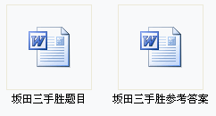

坂田吾朗三手胜全套习题(word版)
首页
定式及研究
#1 坂田吾朗三手胜全套习题(word版) 作者：有志青年 发表时间：2007-9-30 11:20:03

 坂田三手胜题目.rar
坂田三手胜题目.rar
坂田三手胜参考答案.rar
#2 Re:坂田吾朗三手胜全套习题(word版) 作者：只影游魂 发表时间：2008-7-8 22:45:13
有意思，谢谢斑竹
#3 Re:坂田吾朗三手胜全套习题(word版) 作者：司马长风 发表时间：2008-8-9 23:50:13
谢谢斑竹，初学者真地很艰难。不过努力之后得到乐趣。
#4 Re:坂田吾朗三手胜全套习题(word版) 作者：混凝土 发表时间：2008-8-19 0:32:16
谢谢斑竹
非常的感激
#5 Re:坂田吾朗三手胜全套习题(word版) 作者：自来自去 发表时间：2008-8-30 10:28:44
太好了!我把题目都打印出来了，现在放床边就能做题了！真好！以后有题请多多分享，辛苦了！！！
#6 Re:坂田吾朗三手胜全套习题(word版) 作者：五子棋蝈蝈 发表时间：2008-10-19 13:32:13
适合新手学习，
#7 Re:坂田吾朗三手胜全套习题(word版) 作者：冷风浊月 发表时间：2008-12-31 13:40:06
真的十分感谢斑竹・・・・・・・・・・・・
#8 Re:坂田吾朗三手胜全套习题(word版) 作者：五星若连珠 发表时间：2009-1-2 22:22:48
下载了，准备拿去打印下，睡前看看或者早起时看看，应该不错的。
#9 Re:坂田吾朗三手胜全套习题(word版) 作者：刘初学五子 发表时间：2009-1-3 14:07:46
下载了，好好学学！
还是没有威望啊，无法下载棋谱！
#10 Re:坂田吾朗三手胜全套习题(word版) 作者：旖旎阳光 发表时间：2009-1-7 17:01:48
适合新手学习吗？
#11 Re:坂田吾朗三手胜全套习题(word版) 作者：屠羊说 发表时间：2009-1-8 20:31:07
非常十分很感谢，听说过三手胜，能在这里见到Word版的，可以下载打印慢慢思考，功德无量！功德无量！
顺便请教一下啊：三手胜是指的轮到下棋的一方只用三步棋就连五了？还是出现四三（包括白棋的三三）就算胜了？还是下一步才出现四三（白棋三三）？怎么好多题我觉得得要好几步才行呢？
注：我想先不下载答案，看看自己能蒙对几道，算个测验吧。
#12 Re:坂田吾朗三手胜全套习题(word版) 作者：周州州 发表时间：2009-1-12 13:47:17
请问这是全部的题目吗？还是就入门级的？
#13 Re:坂田吾朗三手胜全套习题(word版) 作者：阿歌 发表时间：2009-2-5 11:58:12
偶觉得高手是不会走到5连时才认输赢的，所以这里说的三手应该是出现了四吧。
#14 Re:坂田吾朗三手胜全套习题(word版) 作者：甲乙 发表时间：2009-2-15 19:31:10
对初学很好的习题．．收下的．．打印去．．
#15 Re:坂田吾朗三手胜全套习题(word版) 作者：骸 发表时间：2009-2-18 14:49:09
请斑竹发些高级点的习题.以便研究
#16 Re:坂田吾朗三手胜全套习题(word版) 作者：病维摩 发表时间：2009-3-4 20:23:07
不错，这样我就可以上班时候看了。^_^。
#17 Re:坂田吾朗三手胜全套习题(word版) 作者：爱下不下 发表时间：2009-3-5 11:15:22
对于我这样的新手，坂田吾朗三手胜的入门级别的题都不容易啊
#18 Re:坂田吾朗三手胜全套习题(word版) 作者：孤影锁寒楼 发表时间：2009-3-5 17:04:58
学习方式真好,好好学习一下
#19 Re:坂田吾朗三手胜全套习题(word版) 作者：超级菜鸟徒弟 发表时间：2009-3-12 13:40:48
 非常感谢！坛主还把这么好的书做成了Word版本的，方便打印，考虑真周到。
非常感谢！坛主还把这么好的书做成了Word版本的，方便打印，考虑真周到。
#20 Re:坂田吾朗三手胜全套习题(word版) 作者：来客沙丝 发表时间：2009-3-25 19:55:16
太好了，多练练。
#21 Re:坂田吾朗三手胜全套习题(word版) 作者：吴子棋一 发表时间：2009-4-23 10:18:01
好东东，谢谢楼主！
#22 Re:坂田吾朗三手胜全套习题(word版) 作者：梧桐影 发表时间：2009-5-3 20:05:32
谢谢楼主！下载学习
、、、
#23 Re:坂田吾朗三手胜全套习题(word版) 作者：卓越十九 发表时间：2009-7-24 14:56:46
好东西，缺少97-99题的答案，望能补充
#24 Re:坂田吾朗三手胜全套习题(word版) 作者：下一步该怎么走呢 发表时间：2009-7-28 14:00:05
真是不错的东西，很适合我们新手练习算力 支持！
支持！
#25 Re:坂田吾朗三手胜全套习题(word版) 作者：亦可 发表时间：2009-7-28 23:02:23
请教一下什么叫三手胜
#26 Re:坂田吾朗三手胜全套习题(word版) 作者：亦可 发表时间：2009-7-28 23:04:49
是三步就必杀吗
#27 Re:坂田吾朗三手胜全套习题(word版) 作者：被逼注册 发表时间：2009-11-3 16:18:33
好东西，谢了
#28 Re:坂田吾朗三手胜全套习题(word版) 作者：人更 发表时间：2010-9-26 12:39:52
谢谢了，做某word版天狗做不动，做做这个先~
#29 Re:坂田吾朗三手胜全套习题(word版) 作者：雪野暑光 发表时间：2010-11-20 17:04:12
斑竹 将来我要打败你
#30 Re:坂田吾朗三手胜全套习题(word版) 作者：暗之王子 发表时间：2010-11-20 17:31:01
谢谢斑竹！要提高计算能力除了实战还是要做题啊！
#31 Re:坂田吾朗三手胜全套习题(word版) 作者：秋天回来 发表时间：2011-4-10 14:26:03
分享一下，下载学习！！！
#32 Re:坂田吾朗三手胜全套习题(word版) 作者：jykai 发表时间：2011-11-2 22:40:31
在哪下载啊,
#33 Re:坂田吾朗三手胜全套习题(word版) 作者：冰玉 发表时间：2012-1-5 9:48:13
我是来学习的，非常想跟各位师傅学习啊
#34 Re:坂田吾朗三手胜全套习题(word版) 作者：王安石 发表时间：2012-2-9 10:17:13
坂田的题不错，呵呵，确实能使自己的五子水平得到提升，不过还在于自己的努力哟！